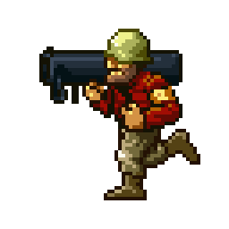
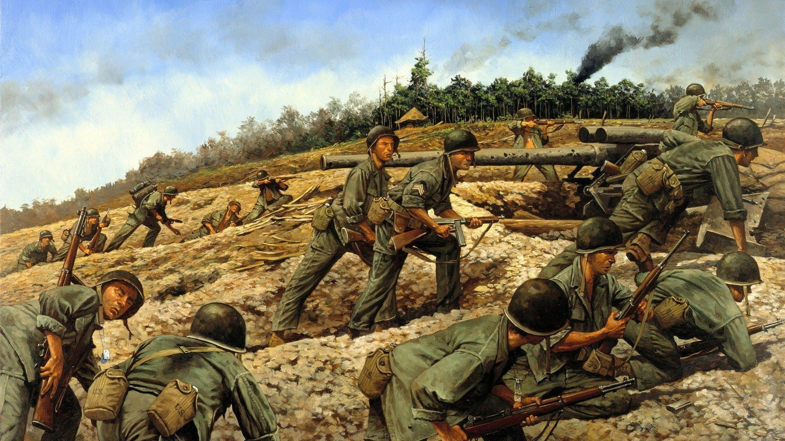
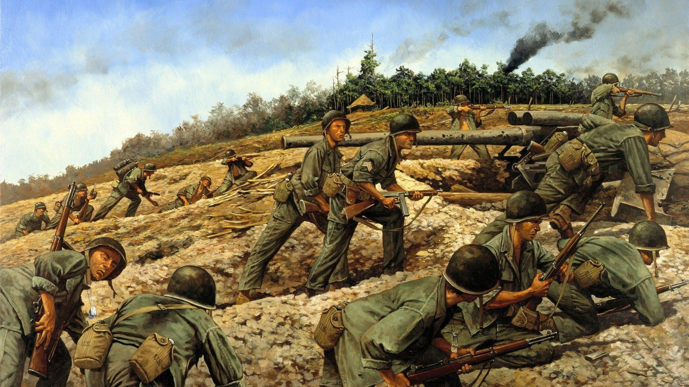

get started
Join us to defend, serve, and make a difference on the frontlines of honor and bravery.
Whats your type?
- infantry
- artillery
- engineers
- medics
- intelligence
- special forces
 

Hiring for military roles involves a rigorous and multifaceted process aimed at selecting individuals committed to service, discipline, and the defense of their nation's values. It starts with recruitment efforts tailored to attract diverse candidates possessing varying skill sets and qualifications.
The military seeks individuals who embody key traits such as dedication, adaptability, leadership, and a strong sense of duty. Recruitment efforts span across various channels, including outreach programs, online platforms, job fairs, and collaborations with educational institutions.
The selection process involves comprehensive evaluations that assess physical fitness, mental aptitude, and character. Prospective recruits undergo thorough background checks, medical examinations, and aptitude tests to determine their suitability for specific roles within the military.
Training is a cornerstone of military recruitment. Once selected, recruits undergo rigorous training programs that instill discipline, cultivate teamwork, and develop specialized skills necessary for their designated roles. This training phase is designed to prepare individuals to face the challenges of active duty with resilience and competence.
Beyond skill development, the military emphasizes the importance of values and ethics, fostering a culture of integrity, honor, and respect among its members. Those who join the military dedicate themselves to a life of service, often facing demanding circumstances and placing the mission and welfare of their comrades above personal interests.

embodies valor, sacrifice, and unwavering dedication, standing as a beacon of bravery and guardianship for our nation's ideals
.